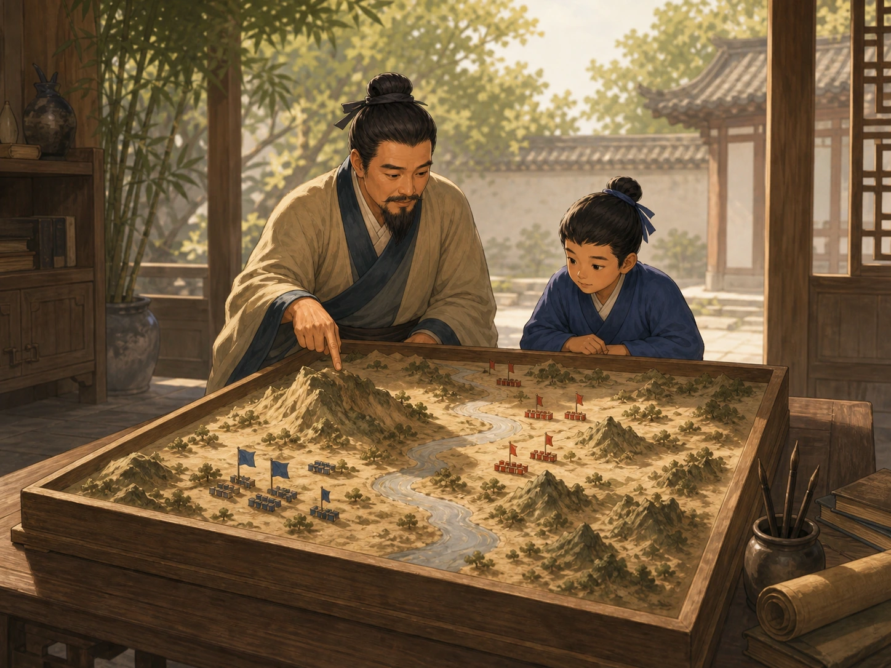
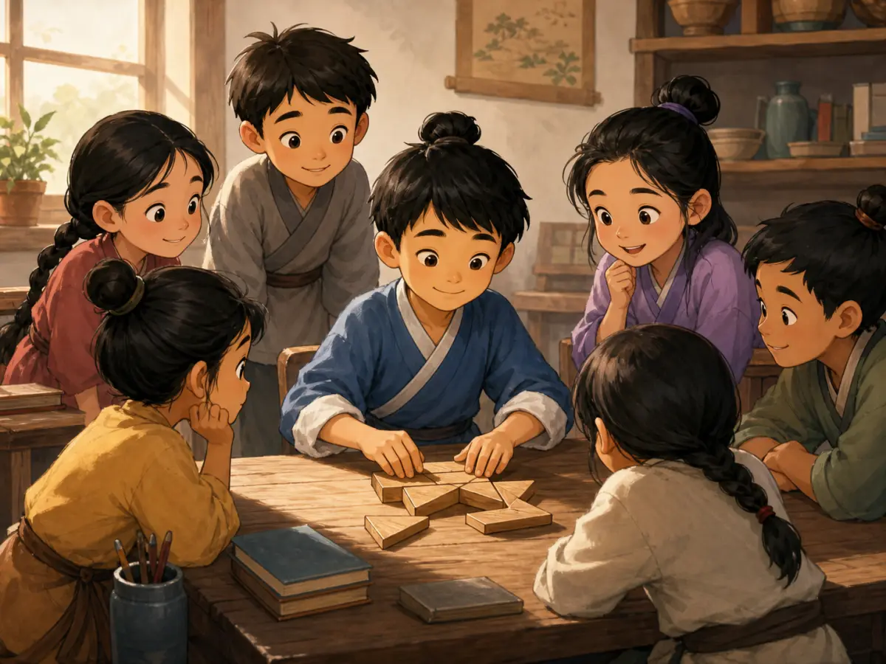

《孙子兵法》：行动以前先看看
The Art of War: Look Before You Move
Page 1
跑得快就一定先找到吗？
Will the Fastest Seeker Always Win?

Hide-and-seek is a modern example about observing. It is not a small war.
两个孩子玩捉迷藏。一个跑得很快，却不知道房子后面有一道小门。另一个跑得慢一点，却先看过院子的角落，也记得朋友喜欢躲在哪里。谁更可能先找到人？
这个游戏提醒我们：行动以前，先观察、比较和准备。
《孙子兵法》是一部古代军事书。捉迷藏只是大家同意玩的游戏，战争却会让人受伤、死亡，也会毁掉家园。我们可以学习“先看再动”，却不能把游戏和战争说成同一件事。
Two children play hide-and-seek. One can run very fast but does not know about a little gate behind the house. The other runs more slowly but has studied the yard and remembers where friends like to hide. Who is more likely to find everyone first?
The game reminds us to observe, compare, and prepare before moving.
The Art of War is an ancient military book. Hide-and-seek is a game that everyone agrees to play. War hurts and kills people and destroys homes. We can learn “look before you move” without pretending that games and war are the same.
Page 2
先在桌上比较
Compare First

This tabletop map is an imagined teaching scene, not a record of Sun Wu's classroom.
真正行动以前，古代将领要问很多问题：路多远？天气怎样？哪里容易通过？队伍有没有食物和训练？命令能不能说清楚？
《孙子兵法》不说“只要勇敢就够了”。勇气没有信息、准备和判断，可能把很多人带进危险。
书里还有一句“知彼知己，百战不殆”。它不是保证一百次都赢，而是说，了解双方的情况，比较不容易走进危险。
Before moving, an ancient commander had many questions. How long was the road? What was the weather? Where could people cross safely? Did the army have food and training? Could leaders give clear orders?
The Art of War never says, “Courage is all you need.” Courage without information, preparation, and judgment may lead many people into danger.
The book also says, “Know the other side and know yourself.” It does not promise one hundred victories. It says that understanding both sides can help you avoid danger.
Page 3
动手以前，多想一步
Think One Step Further

The children studying wooden pieces are a modern symbol, not a story from the ancient book.
《孙子兵法》认为，攻打一座有高墙的城市是很差的办法。长时间围城会用掉很多工具、时间和生命。
书里说“不战而屈人之兵”更高明。这仍然是让对方屈服，不是大家成为朋友。它在计算怎样减少战争损失，不是在教校园里的友善合作。
今天，我们可以学会行动前想想代价，却不应该用欺骗去对付朋友。
The Art of War says that attacking a walled city is a poor choice. A long siege uses equipment, time, and human lives.
The book prefers making an enemy give in without a battle. This is still force in a war. It does not mean that everyone becomes friends. The book is trying to reduce military cost, not teaching kindness at school.
Today, we can think about the cost before acting. We should not turn military deception into advice for tricking friends.
Page 4
水会改变方向
Water Changes Direction

The stream shows water changing with the land. The people are not historical portraits.
水流过山谷、斜坡和石块，会随着地形改变方向。《孙子兵法》用水说明，局面改变时，办法也要调整。
这不表示水永远绕路，也不是说为了赢可以不守规则。它只提醒我们：原来的方法卡住时，可以重新观察，再换一种办法。
改变方法不是失败。可是普通生活里的新办法，还要先通过公平、诚实和安全的检查。
Water moves through valleys, down slopes, and around rocks. Its direction changes with the land. The Art of War uses water to show that a plan may need to change when the situation changes.
This does not mean that water always goes around or that winning makes it okay to break rules. It reminds us that when one method is stuck, we can observe again and try another.
Changing a method is not failure. In daily life, a new plan must still be fair, honest, and safe.
危险越大，越不能冲动
The Greater the Danger, the More We Must Think
我们不能确定《孙子兵法》是不是孙武一个人一次写完的。两千多年前的竹简证明这部古书很早就在流传，却不能回答所有作者问题。
今天最值得带走的，不是怎样骗过别人，而是几个问题：我知道什么？还不知道什么？判断错了，谁会付出代价？有没有损失更小的办法？
局面越危险，越不能只靠冲动向前跑。
We cannot be certain that one man named Sun Wu wrote all of The Art of War at one time. Bamboo copies more than two thousand years old prove that the text traveled early, but they do not answer every question about its writers.
The lesson worth carrying away is not how to fool people. Ask instead: What do I know? What do I still need to learn? If I am wrong, who will pay the cost? Is there a path that causes less harm?
The greater the danger, the less we can afford to run forward on impulse.
《孙子兵法》：先看清，再行动
The Art of War: See Clearly Before You Act
Page 1
捉迷藏只是一个入口
Hide-and-Seek Is Only a Doorway
This modern game helps explain observation. It is not a smaller version of war.
捉迷藏里，跑得最快的人不一定先找到大家。知道院子角落、小门和朋友习惯的人，可能更有优势。这个游戏帮助我们理解《孙子兵法》的思考习惯：先收集信息、比较条件、判断变化。
不过，游戏有大家同意的规则，战争会带来伤亡和家园毁坏。《孙子兵法》开头就把战争称为关系国家存亡、人生死的大事，绝不能不认真研究。
这不是教孩子“赢过所有人”的书。它是古代军事思想。我们能研究它的观察方法，也必须记住它原来的战争背景。
The fastest seeker in hide-and-seek may not find everyone first. A slower player who knows the corners, gates, and favorite hiding places may have the advantage. The game introduces one habit in The Art of War: gather information, compare conditions, and watch for change.
But a game has rules everyone accepts. War causes injury, death, and destroyed homes. The book opens by calling war a matter of national survival and human life that must be studied with the greatest care.
This is not a guide for children who want to “beat everyone.” It is ancient military thought. We can examine its way of observing while remembering its subject was war.
Page 2
“孙子”是谁？
Who Was “Master Sun”?
传统把《孙子兵法》和孙武联系起来。“子”是对老师或思想家的尊称。几百年后的司马迁写下孙武为吴王训练军队的故事，并说他有十三篇兵法。
这不是孙武时代的现场记录。许多学者认为，今天的书可能在战国时期逐渐形成，整理了更大的军事思想传统，而不是一个人一天写完。
1972年，考古学家在中国东部的沿海省份。看中国地图时，山东有一块半岛伸进黄海；北京在它的西北方向，上海在它的南边。银雀山汉墓发现《孙子兵法》和另一部《孙膑兵法》的竹简。它们证明两部不同的书在两千多年前已经同时流传，却不能解决孙武和每章作者的所有问题。
Tradition links The Art of War with Sun Wu. The word zi is a respectful title for a teacher or thinker, so Sunzi means “Master Sun.” Centuries later, Sima Qian told a story about Sun Wu training troops for the king of Wu and credited him with thirteen chapters.
This was not an eyewitness record. Many scholars think the book gradually took shape during the Warring States period from a broader tradition of military thought rather than being written by one person at one time.
In 1972, archaeologists found bamboo copies of The Art of War and a different book, Sun Bin's Art of War, in Han tombs at Yinqueshan in A coastal province in eastern China. On a map, its peninsula reaches into the Yellow Sea; Beijing is northwest of it, and Shanghai is farther south.. The finds prove that both works circulated more than two thousand years ago. They do not solve every question about Sun Wu or each chapter's author.
Page 3
出发以前比较五方面
Compare Five Things Before Setting Out
This imagined tabletop map is not a record of Sun Wu or an ancient classroom.
真正行动以前，要问路程、天气、地形、食物、训练和命令。《孙子兵法》把比较整理在“道、天、地、将、法”五个标题下，涉及人心、时机天气、地形远近、将领能力和军队组织。
书中没有“只要勇敢就够了”。勇气离开信息、准备和判断，可能把许多人带进危险。
“知彼知己，百战不殆”也不是胜利保证。它说了解双方条件，反复作战不容易陷入危险。所谓“知”来自观察、比较和可靠信息，不是猜对方心里想什么。
Before moving, a commander must consider distance, weather, terrain, food, training, and clear orders. The Art of War organizes comparison under five headings that include unity, timing and weather, the shape of the land, leadership, and military organization.
The book never says that courage is enough. Courage without information, preparation, and judgment may lead many people into danger.
“Know the other side and know yourself” is not a guarantee of victory. It says that understanding both sides helps keep repeated battles from becoming perilous. Knowledge comes from observation, comparison, and dependable information - not mind-reading.
Page 4
不打也能让对方屈服？
Winning Without a Battle?
Children studying pieces are a modern symbol of thinking first, not a scene from the text.
《孙子兵法》说，每战都胜也不是最高明；让对方不战而屈服更好。它把破坏计划放在攻击军队之前，把攻城列为下策，因为围城会消耗器械、时间和生命。
“不战”不是温柔的和平口号，目标仍是让敌人屈服。它计算怎样避免正面战斗的巨大代价，不是在教现代友善合作。
图片提醒我们动手前多想可能减少浪费，却不表示欺骗朋友是聪明。军事方法进入普通生活前，需要经过道德和规则检查。
The Art of War says that victory in every battle is still not the highest skill. Making an enemy submit without battle is better. The book ranks breaking plans ahead of attacking armies and places siege last because it consumes equipment, time, and lives.
“Without fighting” is not a gentle peace slogan. The goal is still to make an enemy give in. The text calculates how to avoid the terrible cost of direct battle; it is not teaching modern cooperation.
The picture suggests that thinking first can reduce waste. It does not say that deceiving friends is clever. Military methods need an ethical and rules check before entering ordinary life.
Page 5
水没有固定形状
Water Has No Fixed Shape
The stream shows water changing with the land. The people are not portraits of Sun Wu.
《孙子兵法》说，水随地形改变水流，军事行动也要根据对方和局面调整。它还说避开对方防守最坚固的地方，寻找准备不足之处。
图片里的水很适合说明“随地形改变”，却不是孙武带孩子看水的故事。原文也没说水从不用力、什么都挡不住或一定流进大海。比喻的重点是没有固定形状。
生活中可以问“原办法卡住了，能不能换一种”，却不能因此不守规则或隐瞒欺骗。
The Art of War says that water shapes its flow to the land and military action must change with the other side and the situation. It also advises avoiding the strongest defense and looking for places that are less prepared.
The stream makes adaptation visible, but it is not a story about Sunzi teaching beside a river. The text does not say that water never uses force, that nothing stops it, or that it always reaches the sea. The point is its lack of one fixed shape.
In daily life, we may ask whether a stuck method should change. That never gives us permission to break rules or deceive people around us.
Page 6
性格走向极端也会危险
A Strength Can Become a Trap
书中列出将领的“五危”，包括鲁莽、只想保命、容易被激怒、承受不了羞辱，以及对士兵的关心被对方利用。翻译者对一些短句理解不同，核心提醒是：性格走向极端，会变成敌人可以抓住的把手。
勇气、安全、名誉和关心本身不是错误。问题是只能用一种方式反应。鲁莽冲进陷阱，恐惧让人不敢决定，怒气让人按照对方希望的方向走。
《孙子兵法》也谈欺骗、间谍、火攻和进军，不是普通情绪管理书。它最严肃的问题是：决定牵涉许多人生命时，领导者怎样面对信息、代价和责任？
The book lists five dangers for commanders, including recklessness, fear for one's own life, a temper that can be provoked, honor that cannot bear shame, and care for soldiers that an enemy can exploit. Translators understand some compact phrases differently. The central warning is clear: a trait pushed to an extreme can become a handle for an enemy.
Courage, safety, honor, and care are not wrong. The danger comes when a leader can respond in only one way. Recklessness enters a trap, fear freezes a choice, and anger moves exactly where an opponent wants.
The Art of War also discusses deception, spies, fire attacks, and troop movements. It is not an ordinary emotions book. Its serious question is how a leader should face information, cost, and responsibility when many lives depend on a decision.
危险局面中的警告牌
A Warning Sign for Dangerous Situations
两千多年前，抄写者把这部兵书写在竹片上。文本流传很久，作者问题仍不简单。古代记录、考古和现代研究要放在一起读。
回到捉迷藏，值得带走的不是骗朋友，而是行动前的问题：我知道什么？还缺什么信息？判断错了谁付代价？有没有损失更小的办法？
《孙子兵法》不能回答今天每件事。它像古老警告牌：局面越危险，越不能靠冲动向前跑。
More than two thousand years ago, copyists brushed this military text onto bamboo. The book has traveled far, but its authorship remains complicated. Ancient records, archaeology, and modern research must be read together.
Return to hide-and-seek. The lesson is not how to trick friends. Ask before moving: What do I know? What information is missing? If I am wrong, who pays the cost? Is there a path that causes less harm?
The Art of War cannot answer every modern problem. It is an ancient warning sign: the more dangerous the situation, the less we can afford to move on impulse.
《孙子兵法》：行动之前，先看清局面
The Art of War: Look Before You Move
Page 1
捉迷藏为什么不只比谁跑得快？
Why Is Hide-and-Seek About More Than Speed?
Hide-and-seek is a modern way to think about observing before acting. It is not a small version of war.
想象一场捉迷藏。找人的孩子跑得飞快，却不知道房子后面还有一道小门；另一个孩子跑得不快，却先看过院子的角落，也记得朋友们喜欢躲在哪里。谁更可能先找到人？
这个游戏可以帮助我们理解《孙子兵法》的一个习惯：行动以前，先收集信息、比较条件、判断变化。不过，捉迷藏终究只是大家同意参加的游戏，战争却会让人受伤、死亡，也会毁掉家园。《孙子兵法》开头就说：“兵者，国之大事，死生之地，存亡之道，不可不察也。”大意是，战争关系到国家存亡和人的生死，绝不能不认真研究。
所以，这本书不是在教孩子怎样“赢过所有人”。它记录的是古代军事思想，讨论统治者和将领怎样在极其危险的局面中判断、准备和行动。我们今天可以研究其中的观察方法，同时也要记住它原来的战争背景。
Imagine a game of hide-and-seek. One seeker can run very fast, but does not know about the little gate behind the house. Another seeker is slower, but has studied every corner of the yard and remembers where each friend likes to hide. Who is more likely to find everyone first?
This game can help us understand one habit in The Art of War: before you act, gather information, compare the conditions, and watch for change. But hide-and-seek is a game that everyone agrees to play. War kills and injures people and can destroy their homes. The opening of The Art of War says that war is a matter of life, death, survival, and ruin, so it must be studied with great care.
This book was not written to teach children how to “beat everyone.” It is an ancient work of military thought about how political leaders and military commanders prepared and made choices in dangerous situations. We can study its way of observing a problem while remembering that its original subject was war.
Page 2
“孙子”究竟是谁？
Who Was “Master Sun”?
《孙子兵法》传统上被认为出自孙武。“子”在这里是对老师或思想家的尊称，因此人们也叫他孙子。生活在孙武传说年代几百年后的历史学家司马迁，写下了孙武为吴王训练军队的故事，并说他有十三篇兵法。
但这不是孙武生活时代留下的现场记录。现代学者对孙武是否确有其人、书中哪些部分形成于什么时候，仍有不同看法。一些研究者认为，今天看到的《孙子兵法》更可能在战国时代逐渐形成，汇集并整理了一个军事思想传统，而不是一个人在某一天从头写到尾。
1972年，考古学家在中国东部的沿海省份。看中国地图时，山东有一块半岛伸进黄海；北京在它的西北方向，上海在它的南边。临沂的银雀山西汉墓中发现了写在竹片上的《孙子兵法》和《孙膑兵法》。这些竹简说明，早在两千多年前，两部名称相近却不同的兵书已经同时流传。它们证明古老文本确实存在，却不能替我们回答关于孙武本人和每一章作者的所有问题。
Tradition connects The Art of War with a man named Sun Wu. The word zi in Sunzi is a respectful title for a teacher or thinker, so the name means “Master Sun.” The historian Sima Qian, writing centuries after the time when Sun Wu was said to have lived, told a story about Sun Wu training troops for the king of Wu. He also said that Sun Wu had written thirteen chapters on warfare.
That account is not an eyewitness record from Sun Wu’s lifetime. Scholars still disagree about whether Sun Wu was a clearly identifiable historical person and when different parts of the book took shape. Many researchers think the work grew during the Warring States period out of a larger tradition of military teaching. It may not have been written from beginning to end by one person at one time.
In 1972, archaeologists opened an early Han dynasty tomb at Yinqueshan in what is now A coastal province in eastern China. On a map, its peninsula reaches into the Yellow Sea; Beijing is northwest of it, and Shanghai is farther south. Province. Inside were bamboo strips carrying parts of both The Art of War and a different book called Sun Bin’s Art of War. The discovery shows that these two similar-sounding works circulated separately more than 2,000 years ago. It proves that the old texts existed, but it cannot answer every question about Sun Wu or the writer of each chapter.
Page 3
还没出发，先在桌上比较
Compare Before You Set Out
This is an imagined teaching scene, not a historical record of Sun Wu or an ancient classroom.
想象一张摆着山、河、道路和小旗的地图。真正行动之前，先要问：路有多远？天气怎样？哪里容易通过，哪里会把人困住？队伍有没有食物和训练？命令能不能传清楚？
《孙子兵法》第一篇把战争称为必须认真“察”的大事，接着要求比较多方面条件。书中用“道、天、地、将、法”五个字来整理问题，包含人心是否一致、天气与时机、地形远近险易、将领能力以及军队的组织和规则。这里没有一句“只要勇敢就够了”。勇气如果离开信息、准备和判断，反而可能把许多人带进危险。
这张桌上地图是配图画出的想象场面，不是孙武授课的历史照片。它让我们看见《孙子兵法》的思考顺序：先比较，再决定；先问代价，再问能不能做。
Picture a table covered by a model of mountains, rivers, roads, and small flags. Before anyone moves, there are questions to ask. How long is the road? What is the weather like? Which ground is easy to cross, and which ground could trap an army? Does the army have food and training? Can its leaders give clear orders?
The first chapter of The Art of War says that war must be carefully examined. It then compares many conditions under five headings: the people’s unity, weather and timing, the shape and distance of the land, the commander’s ability, and the army’s rules and organization. Nowhere does the book say, “Courage is all you need.” Courage without information, preparation, or judgment can lead many people into danger.
The model map in the picture is an imagined scene, not a photograph of Sunzi teaching a student. It helps us follow the book’s reasoning: compare before deciding, and ask about the cost before asking whether something can be done.
Page 4
“知彼知己”不是胜利保证书
“Know the Other Side and Yourself” Is Not a Guarantee
《孙子兵法》第三篇有一句非常有名的话：“知彼知己，百战不殆。”这里的“彼”是对方，“己”是自己，“殆”更接近危险。整句话不是说掌握一点资料就能一百次全胜，而是说，了解双方条件，反复作战也不容易陷入危险。
而且，“知彼知己”不是猜测对方心里在想什么。书中刚刚列出的判断包括什么时候能战、什么时候不能战，怎样面对人数不同的队伍，自己是否准备好，对方是否没有准备。所谓“知”，需要观察、比较和可靠信息。
把它放进球赛，可以得到一个有限的现代例子：球队要知道自己的体力、配合和弱点，也要研究对方的打法与场地。但球赛有规则和裁判，战争没有这样安全的边界。这个例子只能帮助理解“准备”，不能把比赛和战争说成同一回事。
Chapter 3 contains the book’s most famous line: “Know the other side and know yourself; through a hundred battles, you will not be in danger.” The Chinese word often translated as “danger” does not mean “you are guaranteed to win.” The phrase is about avoiding peril again and again because you understand the conditions on both sides.
Knowing the other side does not mean guessing what someone is thinking. The lines just before this one ask whether a commander knows when to fight and when not to fight, how to handle forces of different sizes, and whether one side is ready while the other is unprepared. Knowledge must come from observation, comparison, and dependable information.
A sports team gives us one limited modern example. Players should know their own energy, teamwork, and weak points, and they should study the other team’s style and the field. Yet sports have agreed rules and referees. War does not have the same safe boundaries, so the comparison helps us understand preparation without pretending that a game and a war are the same thing.
Page 5
为什么最高明的办法不是攻城？
Why Is Attacking a Walled City the Worst Choice?
Children studying the pieces are a modern symbol of thinking before moving, not a scene recorded in the ancient book.
同一篇里还有一句：“不战而屈人之兵，善之善者也。”前一句先说，即使每战都胜，也不算最高明。接着，书中把破坏对方计划放在攻击军队之前，把攻打有城墙的城市放在最下策，因为长期围城会消耗器械、时间和士兵的生命。
因此，“不战”并不是一条温柔的口号，也不等于双方成为朋友。它仍然处在战争语境中，目标仍是让对方屈服，只是尽量不进入代价巨大的正面战斗。这个区别很重要：我们可以看见书中对损失和代价的计算，却不能把古代军事强迫包装成现代校园里的友善合作。
配图中，孩子们围着桌上的木片先想办法，是一个现代象征。它提醒我们，动手前多想一步常能减少浪费；它不是《孙子兵法》里发生过的故事，也不表示对朋友使用欺骗就是聪明。
The same chapter says that winning every battle is not the highest skill. “To make the enemy submit without fighting,” it says, is better. The chapter ranks breaking the enemy’s plans ahead of attacking its army. It puts a siege of a walled city last because a long siege can consume equipment, time, and soldiers’ lives.
“Without fighting” is not a gentle promise that both sides will become friends. The goal is still to force an enemy to give in. The book is weighing how to avoid the cost of a direct clash, not teaching modern peacemaking. That difference matters. We can notice its concern with loss without dressing up ancient military pressure as friendly teamwork.
The picture of children studying wooden pieces is a modern symbol. It suggests that thinking before moving can prevent waste. It is not a scene from The Art of War, and it does not mean that tricking friends is a clever way to solve everyday problems.
Page 6
水教的不是“永远绕路”
Water Does Not Mean “Always Go Around”
The stream shows how water follows the land. The figures are imagined, not historical portraits of Sun Wu.
第六篇把军队的变化比作水：“水因地而制流，兵因敌而制胜。”水流经过山谷、斜坡和石块，会随着地形改变方向；军事行动也不能永远照搬同一个办法，而要根据对方和局面的变化调整。书中还用“避实而击虚”说明，不要硬撞对方防守最坚固的地方，而要寻找没有充分防备之处。
配图里的大石头和溪流很适合帮助我们看见“因地制流”，但它不是一段关于孙子带孩子看水的历史记载。原文也没有说水从不使用力量、一定流进大海，或任何东西都挡不住水。水的比喻只有在边界清楚时才有用：重点是没有固定形状，能够随着条件改变。
现代生活中，我们也可以问：“原来的方法卡住了，我能不能换一种？”但改变方法不等于不守规则，也不等于为了赢可以隐瞒或欺骗身边的人。军事策略进入普通生活以前，需要先经过道德和规则的检查。
Chapter 6 compares an army’s changing shape with water. Water follows the land as it flows. In the same way, a plan must change with the opponent and the situation. The text says to avoid a place where the enemy is solid and prepared and to move toward a place that is open or weak.
The stream and boulder in the picture make that idea easy to see, but they are not part of a historical story in which Sunzi taught a child beside a river. The original text does not say that water never uses force, that nothing can stop it, or that it must always reach the sea. Its point is narrower and more useful: water has no single fixed shape because the ground keeps shaping its path.
In everyday life, we might ask, “My first method is stuck. Can I try another?” But changing methods does not mean breaking rules or hiding the truth from people around us. A military strategy needs an ethical check before anyone carries it into friendship, school, or family life.
Page 7
将领也可能败给自己的性格
A Commander Can Be Trapped by Character
《孙子兵法》第八篇列出将领的“五危”：只顾拼命、只顾保命、容易被激怒、过分怕受辱，以及过度顾惜士兵而受到牵制。不同译者对最后几项的说法不完全一样，但核心提醒很清楚：性格如果走向极端，就可能被对方利用。
这不是说勇敢、珍惜生命、重视名誉或关心士兵本身有错。问题在“只能这样，不能调整”。鲁莽的勇气可能冲进埋伏，恐惧可能让人什么也不敢决定，怒气可能让人按照对方希望的方向行动。一本强调了解对手的书，也要求将领诚实地检查自己。
不过，《孙子兵法》并不是一本普通的情绪管理书。它还讨论欺骗、间谍、火攻和进军，服务的是古代战争。只摘出几句放在海报上，会让这本书显得比实际内容温和，也会错过它最严肃的问题：当决定牵涉许多人的生命时，领导者怎样面对信息、代价和责任？
Chapter 8 lists five dangers for a commander: recklessness, fear for one’s own life, a temper that can be provoked, honor that cannot bear shame, and concern for soldiers that can be used against the leader. Translators explain some of these lines differently, but the warning is clear. A trait pushed to an extreme can become a handle for an enemy to grab.
The book is not saying that courage, safety, honor, or care for soldiers are bad. The danger appears when a leader can respond in only one way. Reckless courage can rush into a trap. Fear can freeze a decision. Anger can make a commander move exactly where the enemy wants.
Still, The Art of War is not an ordinary book about managing emotions. It also discusses deception, spies, fire attacks, and troop movements because it was made for ancient warfare. Pulling out a few wise-sounding lines can make the book seem gentler than it is. Its hardest question is also its most serious one: when a decision can cost many lives, how should a leader face information, risk, and responsibility?
再回到那场捉迷藏
Return to the Game
两千多年以前，有人把这部兵书抄在一条条竹片上；今天，我们能在屏幕和纸书上读到它。文本流传了很久，关于作者的答案却没有因此变得简单。考古发现、古代记载和现代研究要放在一起看，才能知道什么比较确定，什么仍然有争议。
现在再想那场捉迷藏。真正值得带走的，不是怎样骗过朋友，而是行动前的几个问题：我知道什么？我还不知道什么？如果判断错了，谁会付出代价？有没有损失更小的办法？
《孙子兵法》不会替今天的每件事给出答案。它更像一张古老的警告牌：局面越危险，越不能只靠冲动向前跑。
More than 2,000 years ago, a copyist brushed words from this military classic onto narrow strips of bamboo. Today, we can read the work on paper or a screen. The text has traveled a long way, but the history of its author has not become simple. Ancient records, archaeology, and modern scholarship must be read together so we can separate strong evidence from open questions.
Now return to that game of hide-and-seek. The lesson worth carrying away is not how to fool your friends. It is a set of questions to ask before moving: What do I know? What do I still need to learn? If my judgment is wrong, who will pay the cost? Is there a path that causes less harm?
The Art of War cannot answer every modern problem for us. It is more like an ancient warning sign: the more dangerous the situation, the less we can afford to run forward on impulse.